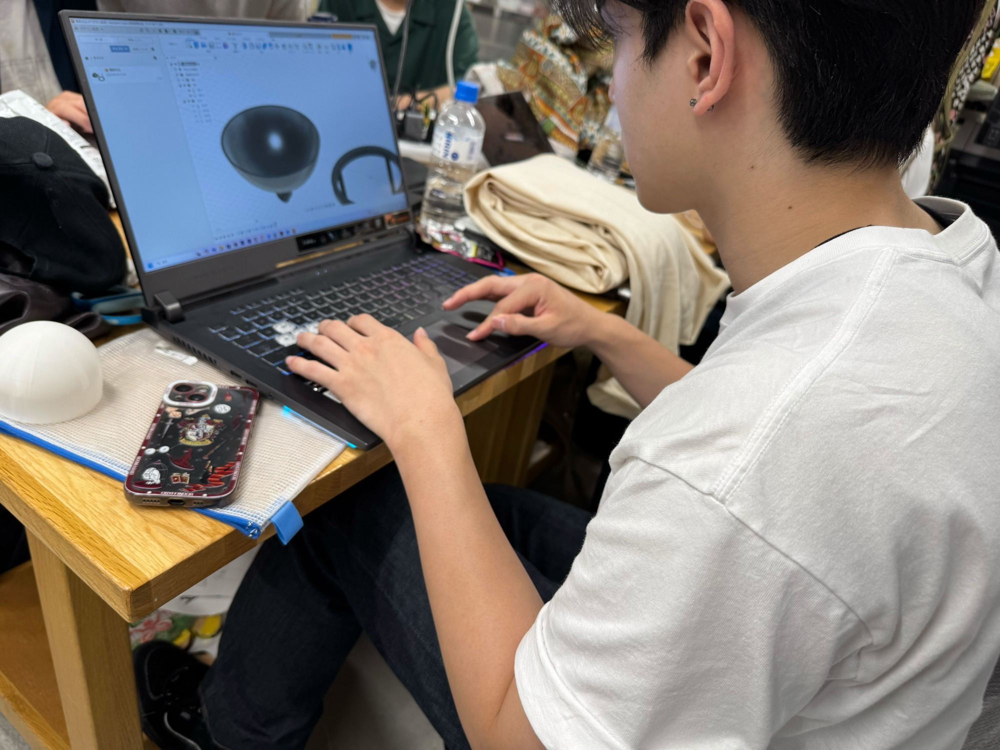
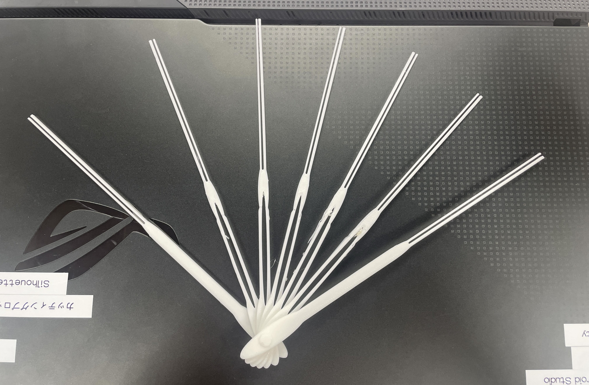
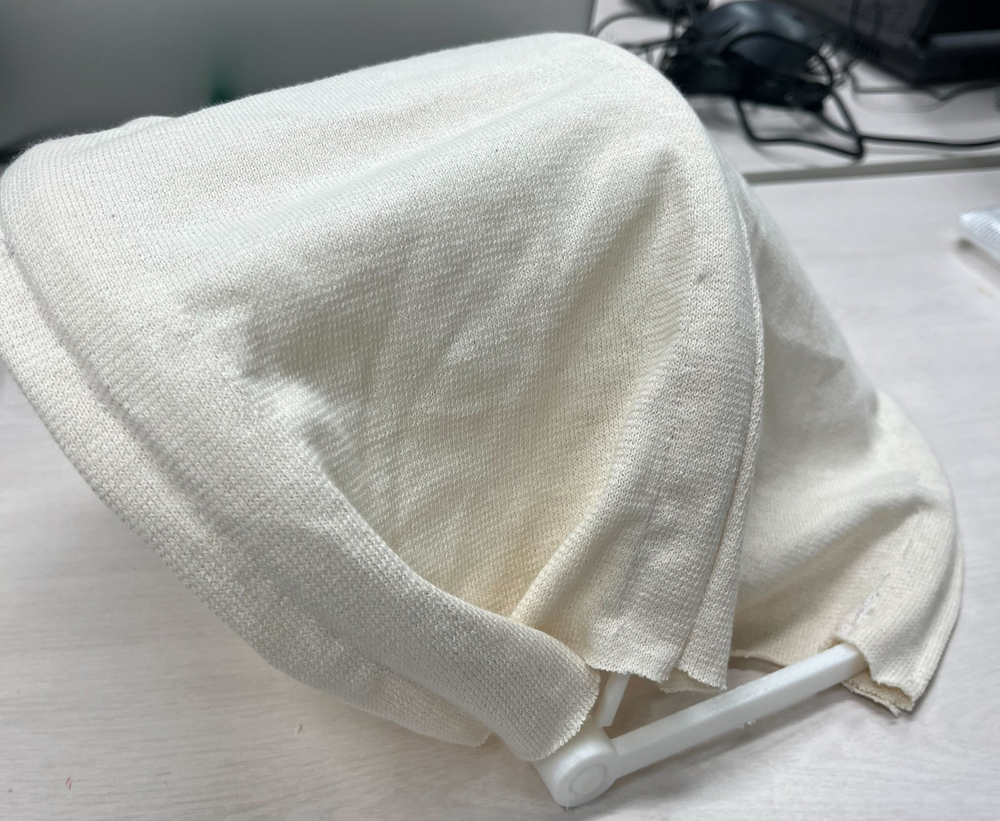
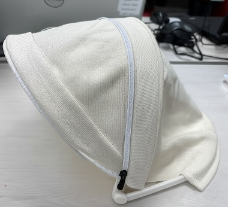
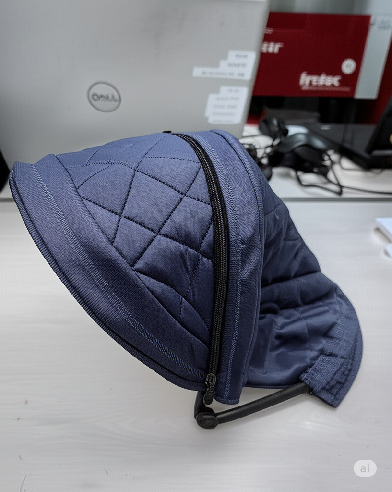

サーキュラープロジェクト事前調べ1
サーキュラーエコノミーについて調べてみました。 従来の3Rだけではなく、原材料の調達から製品デザインの段階から、リサイクル資源の活用を前提とした設計を行うことで廃棄物という概念をなくすことが目標だとわかりました。
東京都環境局の動画を参考にしました。
サーキュラーエコノミーについて調べてみました。 従来の3Rだけではなく、原材料の調達から製品デザインの段階から、リサイクル資源の活用を前提とした設計を行うことで廃棄物という概念をなくすことが目標だとわかりました。
東京都環境局の動画を参考にしました。
サーキュラーデザインについて調べてみました。 NIKEは工場の床に落ちている廃棄物やくずを「宇宙ごみ」と表現し、これらを使用して作られた「スペースヒッピー」というスニーカーを開発しています。
参考サイト
第1回目のサーキュラープロジェクトが開始されました。 今回、使用する紙糸を用いて防暑対策をするということで、紙糸の特性である通気性を活かすのがカギであるような気がするので、 帽子やフードが良いのではないかという案が出されました。
今回は紙糸の特性について調べました。 紙糸は通気性に優れ、湿気を吸収しやすい特徴があります。 これらの特徴を踏まえた上で、自分的には帽子が相応しいと思いました。

第2回目の活動では、実際に紙糸を観察し、特性を研究しました。 研究した結果、私たちのグループでは紙糸の通気性に注目して、ネクタイやスカーフ、扇子などがアイデアとして挙げられました。

中間発表を行いました。「エアブリーズファン」という扇子や「サンシェードフード」という持ち運びができるフードの発表を行いました。 メンターの方にはもっと紙糸を利用している部分に時間を割くべきとのアドバイスを頂きました。

最終発表が迫る中、私たち1班はフードの作成に集中することに決めました。 私はフードの布部分の作成を担当しています。布部分とフレームの作業をうまく進めることができ、一旦形にすることができました。

最終発表が行われました。 完成がかなりギリギリになってしまいましたが、どうにか発表に間に合わせることができました。 結果として、ベストアイデア賞をいただけたことは、1班にとっては1番嬉しいことだったと思います。

ダイイチの本社へ伺い、暑熱対策実証実験会で披露するために、私たちが作成したフードのブラッシュアップをお願いされました。 最終発表の時には、実現することができなかったことを中心に今回は作業を行っていきたいと考えています。